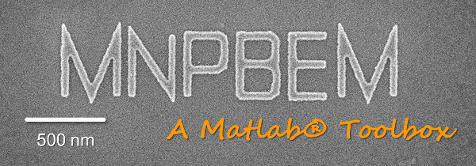

Planewave excitation examples

The runtimes of the following programs are given for my not overly fast office computer (Intel i7-2600 CPU, 3.40 GHz, 8 GB RAM).
Contents
Quasistatic planewave excitation examples
- demospecstat1.m - Light scattering of metallic nanosphere (2 sec). info, run
- demospecstat2.m - Light scattering of metallic nanoellipsoid (4 sec). info, run
- demospecstat3.m - Light scattering of coated metallic sphere (16 sec). info, run
- demospecstat4.m - Field enhancement for coated metallic sphere (8 sec). info, run
- demospecstat5.m - Light scattering of nanotriangle (5 sec). info, run
- demospecstat6.m - Field enhancement for nanotriangle (7 sec). info, run
- demospecstat7.m - Plasmonic eigenmodes for nanodisk (6 sec). info, run
- demospecstat8.m - Light scattering of coupled nanotriangles (bowtie, 9 sec). info, run
- demospecstat9.m - Field enhancement for coupled nanotriangles (bowtie, 14 sec). info, run
Substrate
- demospecstat10.m - Light scattering of metallic nanosphere above substrate (4 sec). info, run
- demospecstat11.m - Field enhancement for metallic sphere above substrate (4 sec). info, run
- demospecstat12.m - Light scattering of nanodisk above substrate (8 sec). info, run
- demospecstat13.m - Field enhancement for metallic disk above substrate (13 sec). info, run
Mirror symmetry and iterative BEM solver
- demospecstat14.m - Light scattering of nanosphere with mirror symmetry (2 sec). info, run
- demospecstat15.m - Light scattering of nanodisk with mirror symmetry (30 sec). info, run
- demospecstat16.m - Field enhancement for nanodisk with mirror symmetry (9 sec). info, run
- demospecstat17.m - Light scattering of nanorod using iterative BEM solver (4 min). info, run
- demospecstat18.m - Auxiliary information for iterative BEM solver (30 sec). info, run
Nonlocal dielectric function
- demospecstat19.m - Light scattering of nanosphere using nonlocality (5 sec). info, run
- demospecstat20.m - Light scattering of coupled nanospheres using nonlocality (90 sec). info, run
Retarded planewave excitation examples
- demospecret1.m - Light scattering of metallic nanosphere (7 sec). info, run
- demospecret2.m - Light scattering of metallic nanodisk (18 sec). info, run
- demospecret3.m - Field enhancement for nanodisk (20 sec). info, run
- demospecret4.m - Spectrum for Au nanosphere in Ag nanocube (2 min). info, run
- demospecret5.m - Field enhancement for Au nanosphere in Ag nanocube (1 min). info, run
Substrate and layer structure
- demospecret6.m - Light scattering of metallic nanosphere above substrate (36 sec). info, run
- demospecret7.m - Field enhancement of metallic nanosphere above substrate (40 sec). info, run
- demospecret8.m - Scattering spectra for metallic nanodisk on substrate (1 min). info, run
- demospecret9.m - Scattering spectra for substrate using PARFOR loop (40 sec). info, run
- demospecret10.m - Nearfield enhancement for metallic nanodisk on substrate (47 sec). info, run
- demospecret11.m - Scattering spectra for two nanospheres in layer (2 min). info, run
- demospecret12.m - Nearfield enhancement for two nanospheres in layer (1 min). info, run
- demospecret13.m - Spectra for metallic nanodisk approaching substrate (8 min). info, run
- demospecret14.m - Spectra for metallic nanodisk on top of substrate (15 min). info, run
Mirror symmetry and iterative BEM solver
- demospecret15.m - Light scattering of nanosphere with mirror symmetry (13 sec). info, run
- demospecret16.m - Light scattering of nanodisk with mirror symmetry (3 min). info, run
- demospecret17.m - Light scattering of nanorod using iterative BEM solver (35 min). info, run
- demospecret18.m - Timing for iterative BEM solver (70 min). info, run
- demospecret19.m - Light scattering of sphere chain using iterative BEM solver (19 min). info, run
- demospecret20.m - Nanorod above substrate using itertive BEM solver (2 hours). info, run
Copyright 2017 Ulrich Hohenester